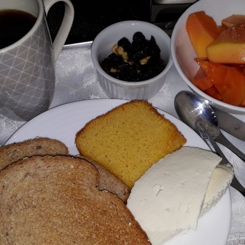
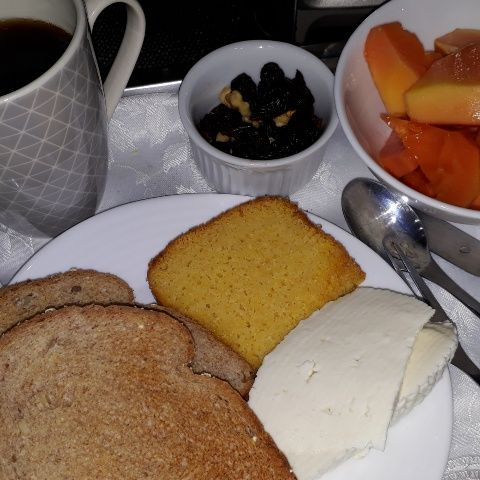

Receitas de café da manhã: 7 opções para sair da rotina - Casa Vogue | Receita
2021.06.21 21:33
menu
Casa Vogue
Edição Digital Interiores Design Arquitetura Lazer CV Estate AssineNavegação
Edição Digital Home Interiores Interiores Voltar Ambientes Apartamentos Casas Casas de famosos Home Office Décor do dia Gente Tudo sobre Interiores Design Design Voltar Design-arte Feiras Móveis Objetos Sustentabilidade Luminárias Prêmio Casa Vogue Design Tecnologia Gente Tudo sobre Design Arquitetura Arquitetura Voltar Casas Cidade Edifícios Paisagismo Gente Tudo sobre Arquitetura Lazer & Cultura Lazer & Cultura Voltar Arte Receitas Fotografia Restaurantes Viagem Livros Hotéis Tudo sobre Lazer & Cultura Mostras & Expos Mostras & Expos Voltar Arquitetura Arte Decoração Design Tudo sobre Mostras & Expos Colunas Colunas Voltar Arte do cinema Camila Klein Casa à Prova Cozinha de Casa Casinha Vogue Revestindo a Casa Use bem o que se tem Cultura Feita À Mão Tudo sobre Colunas Casa Vogue Experience Guia Milão Casa Vogue Apresenta Casa Vogue Estate Um Só Planeta facebook twitter instagram pinterest Assine a revistaEdições | Globo Condé Nast
Copyright © 2021 FecharReceita
Receitas de café da manhã: 7 opções para sair da rotina
Panqueca, bolo, ovos e chocolate quente bem cremoso aparece entre as dicas de café da manhã irresistíveis
2 min de leitura WhatsApp Facebook Twitter Pinterest Linkedin Copiar Link + 02/07/2020 DA REDAÇÃO 12 Jun 2020 - 06h00 Atualizado em 02 Jul 2020 - 08h20 WhatsApp Facebook Twitter Pinterest Linkedin Copiar Link +Quem aí é fã de café da manhã ? Conseguir começar o dia com calma, com uma boa refeição é um luxo muitas vezes, mas vale tirar um dia para incrementar o momento.
Pensando nisso, separamos dicas de café da manhã com receitas doces e salgadas para deixar sua manhã pra lá de especial.
LEIA MAISRessaca? Aprenda a fazer 5 sucos para aliviar os sintomas
Três receitas simples de smoothies
Aprenda a fazer croissant de chocolate branco com queijo brie
Confira!
1. Receita de panqueca americana com frutas
As famosas pilhas de panqueca pode ser feita em sua casa facilmente. Esta receita, que tem sabor ricota com limão, é do Four Seasons Hotel New York e rende até quatro porções. Clique neste link e aprenda a fazer panquecas americanas.
2. Ovos Beneditinos: receita leva espinafre, bacon e molho no pão brioche
Criação americana, os ovos beneditinos consistem em ovos poché combinados com bacon ou presunto e molho holandês numa fatia de pão. Confira a receita neste link.
3. Bolo de canela: aprenda a receita que era sucesso em "A Dona do Pedaço"
Um bolo de especiarias que ganhou fama após aparecer em novela da TV Globo, este é perfeito para acompanhar um cafezinho. Clique neste link e confira a receita do bolo de canela.
4. Receita de cookies de aveia fácil
Há quem adicione um bola de sorvete de creme e os transforme numa bela opção de sobremesa ou sirva com o café depois de um almoço especial. Essa receita é para toda hora! Confira a receita de cookies de aveia neste link.
Inove no café da manhã: prepare toast com ricota de tofu e tomates confit
Do it yourself: bandeja de café da manhã colorida
Mesa de café da manhã decorada com toque mediterrâneo
Cereal com leite de castanha deixa o café da manhã saudável
5. Receita de chocolate quente cremoso para os dias frios
Para os dias mais frios, nada como um chocolate quente para fazer companhia, ainda mais no conforto de casa. Essa receita, servida no Four Seasons Vail, tem como característica principal a cremosidade da bebida – uma tentação! Confira a receita neste link.
6. Rabanada com nutella e frutas frescas
Sempre na época de Natal nos questionamos por que não fazer rabanadas em outros meses do ano, não é mesmo? A sobremesa fica ótima ainda quentinha, acompanhada de uma bola de sorvete ou um café. Clique e aprenda a fazer uma excelente rabanada.
7. Receita de pão italiano: veja como fazer uma versão caseira
Acompanhamento ideal para pastinhas vegetarinas, ou servido como aparetivo, como a tradicional bruschetta, o pão italiano é fácil de fazer, leva poucos ingredientes e ainda deixa um aroma delicioso em casa. Aprenda a fazer pão italiano clicando neste link.
Acompanha tudo de Casa Vogue ? Agora você pode ler as edições e matérias exclusivas no Globo Mais , o app com conteúdo para todos os momentos do seu dia. Baixe agora!
Últimas notícias
Casa Vogue
facebook twitter instagram pinterest Assine a revista Anuncie Assine Expediente Política de Privacidade Princípios Editoriais SACEdições | Globo Condé Nast
Copyright © 2021Globo.com
Globo Lifestyle
- 13 dicas para um café da manhã nutritivo - Caldo Bom
- Receitas de café da manhã: 7 opções para sair da rotina .
- 10 receitas de café da manhã saudável em até 5 minutos .
- Especial café da manhã - Panelinha
- Receita de Panqueca americana | CyberCook
- 8 sugestões para um café da manhã saudável, delicioso e .
- → 20 melhores RECEITAS PARA O CAFÉ DA MANHÃ .
- 11 receitas para o café da manhã para começar o dia bem
- 15 ideias de café da manhã para começar o dia bem
- 32 receitas que vão te ajudar a preparar um café da manhã .
- 13 dicas para um café da manhã nutritivo - Caldo Bom
- Receitas de café da manhã: 7 opções para sair da rotina .
- 10 receitas de café da manhã saudável em até 5 minutos .
- Especial café da manhã - Panelinha
- Receita de Panqueca americana | CyberCook
- 8 sugestões para um café da manhã saudável, delicioso e .
- → 20 melhores RECEITAS PARA O CAFÉ DA MANHÃ .
- 11 receitas para o café da manhã para começar o dia bem
- 15 ideias de café da manhã para começar o dia bem
10 saudável em até 5 minutos · 1. Bolo de chocolate com 3 ingredientes · 2 . - 32 receitas que vão te ajudar a preparar um café da manhã .
10 saudável em até 5 minutos · 1. Bolo de chocolate com 3 ingredientes · 2 .
 
